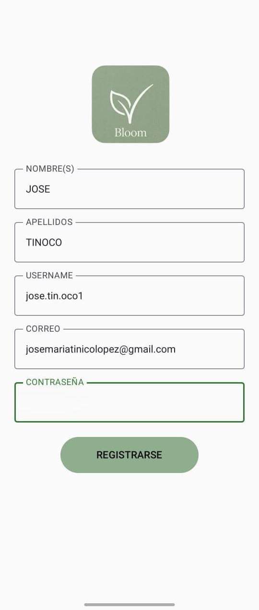
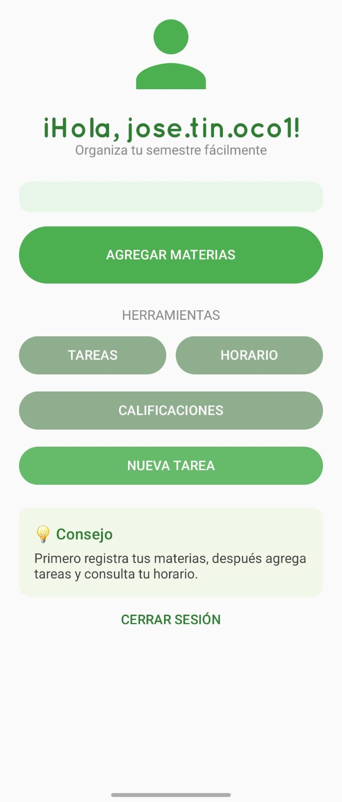
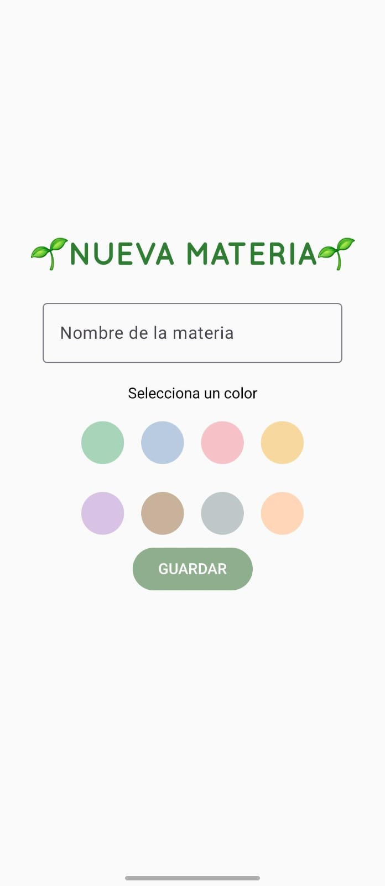
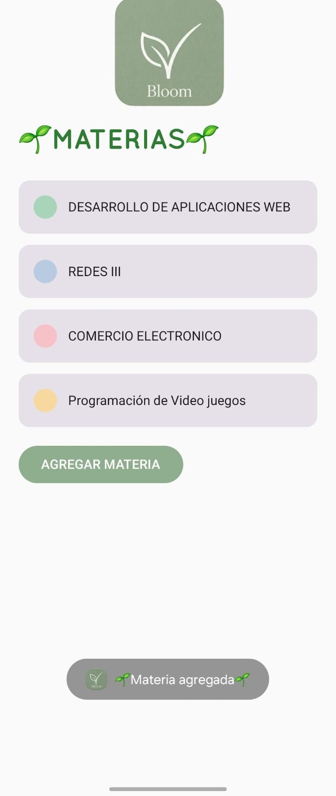
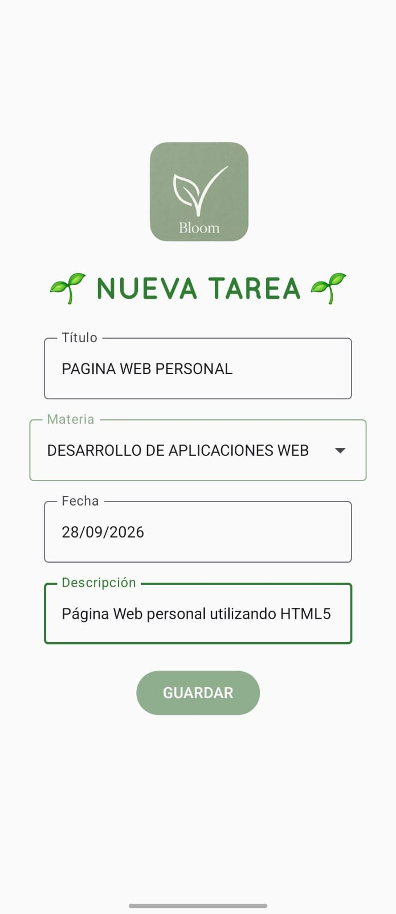
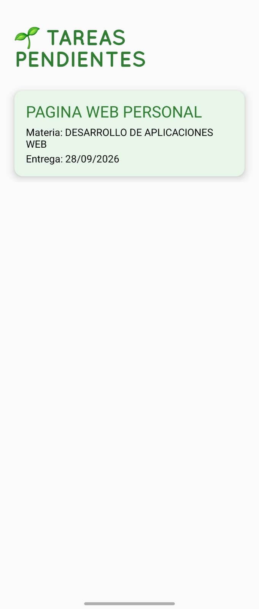
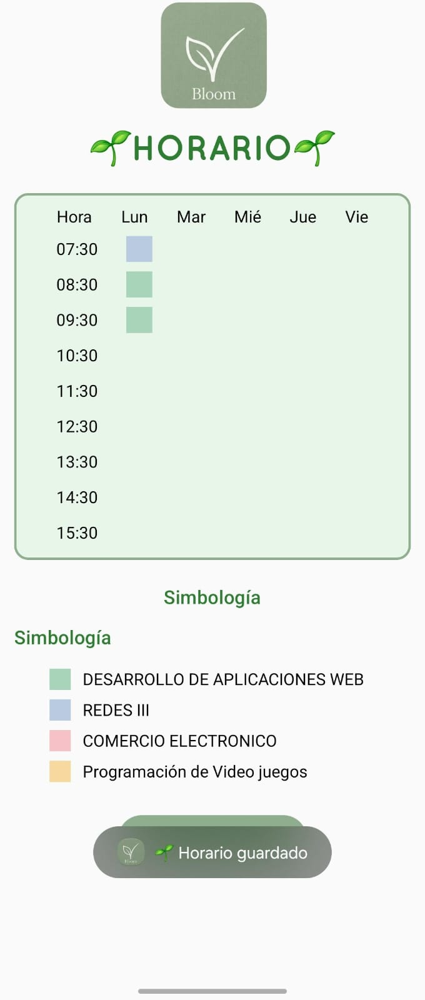

Bloom
- Nombre del proyecto: Bloom
- Plataforma: Android
- Herramienta de desarrollo: Android Studio
- Descripción: Bloom es una aplicación de organización estudiantil diseñada para ayudar a los estudiantes a administrar sus horarios, tareas, calificaciones y actividades académicas de una manera más organizada.






